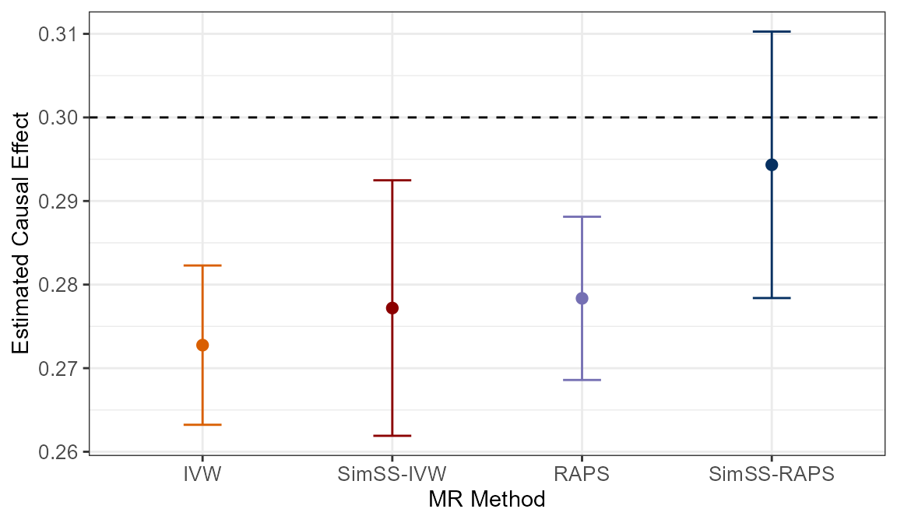

This vignette demonstrates how this R package, mr.simss,
can be used to obtain MR causal effect estimates void of Winner’s
Curse bias using merely two sets of GWAS summary statistics, one
for exposure and the other for outcome. We first create a toy data set
and subsequently, illustrate how MR Simulated Sample Splitting
(MR-SimSS) can be implemented using the mr_simss
function. Various parameters of the mr_simss function are
discussed in detail, while application to real data is also shown at the
end of this vignette.
In order to demonstrate how mr_simss can be applied, we
first create a toy data set consisting of exposure and outcome GWAS
summary statistics. We must specify certain important parameters such as
the number of variants in our data set (n_snps=10^6), the
exposure-outcome correlation (cor_xy=0.5), the causal
effect of the exposure on the outcome (beta_xy=0.3), the
sample size (n_x=n_y=200000) and the fraction of
overlapping samples between the two studies
(frac_overlap=0):
n_snps <- 10^6
prop_effect <- 0.012 # proportion of total SNPs that have effect on exposure
h2 <- 0.5 # heritability of the exposure, i.e. proportion of variance explained in exposure by SNPs
n_x <- 200000; n_y <- 200000
frac_overlap <- 0 # assume two GWASs have been performed with non-overlapping samples
cor_xy <- 0.5
beta_xy <- 0.3 The following code shows how a set of GWAS summary statistics, i.e. estimated variant-exposure associations, estimated variant-outcome associations and their corresponding standard errors \(\left( \widehat{\gamma_j}, \widehat{\sigma_{X_j}}, \widehat{\Gamma_j}, \widehat{\sigma_{Y_j}} \right)\) for each genetic variant \(j = 1, \dots, n\), can be simulated:
set.seed(1025)
n_overlap <- frac_overlap*min(n_x, n_y)
maf <- runif(n_snps, 0.01, 0.5) # minor allele frequencies
effect_snps <- n_snps*prop_effect
index <- sample(1:n_snps, ceiling(effect_snps), replace=FALSE) # random sampling effect variants
beta_gx <- rep(0,n_snps)
beta_gx[index] <- rnorm(length(index),0,1) # simulating true effects
var_x <- sum(2*maf*(1-maf)*beta_gx^2)/h2
if(var_x != 0){beta_gx <- beta_gx/sqrt(var_x)} # scaling to represent exposure with variance 1
beta_gy <- beta_gx * beta_xy
var_gx <- 1/(n_x*2*maf*(1-maf)) # exposure variance = 1
var_gy <- 1/(n_y*2*maf*(1-maf)) # outcome variance = 1
cov_gx_gy <- ((n_overlap*cor_xy)/(n_x*n_y))*(1/(2*maf*(1-maf)))
## Covariance matrix for each SNP:
cov_array <- array(dim=c(2, 2, n_snps))
cov_array[1,1,] <- var_gx
cov_array[2,1,] <- cov_gx_gy
cov_array[1,2,] <- cov_array[2,1,]
cov_array[2,2,] <- var_gy
## Simulating variant-exposure and variant-outcome association estimates
summary_stats <- apply(cov_array, 3, function(x){MASS::mvrnorm(n=1, mu=c(0,0), Sigma=x)})
beta.exposure <- summary_stats[1,] + beta_gx
beta.outcome <- summary_stats[2,] + beta_gy
## GWAS summary statistics:
data <- tibble(
SNP = 1:n_snps,
beta.exposure = beta.exposure,
beta.outcome = beta.outcome,
se.exposure = sqrt(var_gx),
se.outcome = sqrt(var_gy)
)
head(data)
#> # A tibble: 6 × 5
#> SNP beta.exposure beta.outcome se.exposure se.outcome
#> <int> <dbl> <dbl> <dbl> <dbl>
#> 1 1 -0.00468 0.00605 0.00354 0.00354
#> 2 2 0.000141 0.00223 0.00453 0.00453
#> 3 3 0.00286 -0.00884 0.00373 0.00373
#> 4 4 -0.00163 0.000722 0.00417 0.00417
#> 5 5 0.000325 0.00786 0.00730 0.00730
#> 6 6 -0.00510 0.00188 0.00324 0.00324mr_simss
This package’s main function, mr_simss, requires a data
frame, in a form similar to the one above, with columns
SNP, beta.exposure, beta.outcome,
se.exposure and se.outcome. Note that all
columns of the data frame must contain numerical values and each row
must represent a unique genetic variant, identified by
SNP.
## Implementing mr_simss with "mr_raps" and default parameters
simss.est <- mr_simss(data,mr_method="mr_raps",threshold=5e-8,n.iter=1000,splits=3,pi=0.5,pi2=0.5,
subset=TRUE,sub.cut=0.05,
est.lambda=TRUE,n.exposure=1,n.outcome=1,n.overlap=1,cor.xy=0,lambda.thresh=0.5)
simss.est$summary
#> method nsnp niter b se pval
#> 1 mr_raps 251.007 1000 0.2935707 0.007639278 0
head(simss.est$results)
#> method nsnp b se pval
#> 1 mr_raps 265 0.2890714 0.01751133 0
#> 2 mr_raps 245 0.2977485 0.01776773 0
#> 3 mr_raps 247 0.3005120 0.01788805 0
#> 4 mr_raps 243 0.3039359 0.01769095 0
#> 5 mr_raps 263 0.3126508 0.01735312 0
#> 6 mr_raps 259 0.2979125 0.01743181 0As shown above, mr_simss returns a list containing two
elements, summary and results:
summary is a data frame with one row which outputs
b, the estimated causal effect of exposure on
outcome obtained using the MR-SimSS framework,
as well as se, the associated standard error of this
estimate and pval, corresponding p-value. It also
contains the MR method used, the average number of instrument SNPs used
in each iteration and the number of iterations used. Thus, in this case
we see that mr_raps has been used and the sample splitting
process has been repeated 1000 times. On average, ~251.007
instrument variants are selected at each iteration and the
exposure-outcome causal effect is estimated to be 0.2936 with a standard
error of 0.0076.
results is a data frame which contains the output
from each iteration. It is in a similar style as the output from using
the function mr from the TwoSampleMR R
package. The first six rows of this data frame have been outputted
above.
Despite default settings existing for many of the important
parameters in mr_simss, it is important that the user is
aware of these parameters:
mr_method: This is a string specifying the MR method
which the user wishes to be implemented within the MR-SimSS framework.
Despite the user being able to choose many of the methods available in
the TwoSampleMR package, we advise to use either
"mr_raps" or "mr_ivw", with
"mr_raps" being the preferable of the two due to its
robustness to weak instruments.
threshold: This is the \(p\)-value significance threshold which is
applied in the selection step of MR-SimSS, i.e. used to select
instrument variants in the \(\pi\)-fraction. The default setting is the
common genome-wide significance threshold of 5e-8. However,
in low-power settings where very few variants are deemed significant at
this threshold, we encourage users to consider adopting a less stringent
threshold, such as 5e-4, while ensuring
mr_method="mr_raps". This action will yield greater
stability in the causal effect estimate.
n.iter: This specifies the number of iterations of
the method, i.e. the number of times sample splits are randomly
simulated. The default setting is n.iter=1000, which has
been chosen to guarantee stability and reduce variability in the final
MR estimate.
splits: This parameter takes values 2
or 3, indicating whether MR-SimSS should take a 2-split or
3-split approach (see ‘MR-SimSS:
The algorithm’ for further details). The default setting is
splits=3 as the 3-split approach is advised in all cases
where sample overlap is potentially non-zero. When it is known for
certain that the two GWAS samples are non-overlapping, then
splits=2 can be used.
pi: This is the fraction of the first split in both
the 2 and 3 split approaches, i.e. the fraction used for instrument
selection. The default setting is pi=0.5.
pi2: This is the fraction of the second split in the
3 split approach. Similarly, the default setting is
pi2=0.5.
Below, we provide a brief illustration of the difference in using the classical inverse variance weighted (IVW) estimator on its own versus within the MR-SimSS framework:
## SimSS-IVW
res.simss.ivw <- mr_simss(data,mr_method="mr_ivw")$summary
res.simss.ivw
#> method nsnp niter b se pval
#> 1 mr_ivw 250.887 1000 0.2771938 0.007798459 1.003681e-276
## Classical IVW
data_sig <- data %>% dplyr::filter(2*(stats::pnorm(abs(data$beta.exposure/data$se.exposure), lower.tail=FALSE)) < 5e-8)
res.ivw <- summary(stats::lm(data_sig$beta.outcome ~ -1 + data_sig$beta.exposure, weights = 1/data_sig$se.outcome^2))
res.ivw <- data.frame(method="mr_ivw", nsnp=nrow(data_sig), b=res.ivw$coef[1,1], se=res.ivw$coef[1,2]/min(1,res.ivw$sigma))
res.ivw$pval <- 2*stats::pnorm(abs(res.ivw$b/res.ivw$se), lower.tail=FALSE)
res.ivw
#> method nsnp b se pval
#> 1 mr_ivw 916 0.2727558 0.004862308 0A similar comparison is repeated for MR-RAPS:
## SimSS-RAPS
res.simss.raps <- mr_simss(data,mr_method="mr_raps")$summary
res.simss.raps
#> method nsnp niter b se pval
#> 1 mr_raps 250.92 1000 0.2943309 0.008132926 8.73199e-287
## Classical MR-RAPS
data_sig <- data %>% dplyr::filter(2*(stats::pnorm(abs(data$beta.exposure/data$se.exposure), lower.tail=FALSE)) < 5e-8)
res.raps <- mr.raps::mr.raps(data_sig$beta.exposure,data_sig$beta.outcome,data_sig$se.exposure,data_sig$se.outcome)
res.raps <- data.frame(method="mr_raps", nsnp=nrow(data_sig), b=res.raps$beta.hat, se=res.raps$beta.se, pval=res.raps$beta.p.value)
res.raps
#> method nsnp b se pval
#> 1 mr_raps 916 0.2783524 0.004982773 0The following plot summarizes the results obtained above:

In our simulated data set, we have frac_overlap = 0 and
so, bias due to weak instruments and Winner’s Curse will both be in the
direction of the null (see ‘Winner’s
Curse and weak instrument bias in MR’ for detailed
explanation). This bias is illustrated clearly in the plot above as
both classical approaches, IVW and MR-RAPS, are seen to provide causal
effect estimates less than the true value of 0.3: 0.2728 and 0.2784,
respectively. Unfortunately, downward bias is still evident with
SimSS-IVW as it yields a causal effect estimate of 0.2772.
This is observed due to the nature of sample splitting, i.e. it is
possible that additional weak instrument bias is introduced as the
effective sample sizes used for estimation are reduced. Therefore, we
recommend incorporating a two-sample MR method that is robust to weak
instruments, such as MR-RAPS, into the MR-SimSS framework. The
benefit of doing so is depicted in the plot as
SimSS-RAPS clearly performs the best out of all
four approaches, providing a causal effect estimate of 0.2943.
Bias is reduced to -0.0057, a 73.61% improvement on the classical
MR-RAPS implementation. Furthermore, the true causal effect of 0.3 is
now included in the 95% confidence interval.
mr_simss parameters
\(\star\) In the vignette ‘MR-SimSS: The algorithm’, we briefly mention a computationally efficient feature of our approach which involves establishing a subset of genetic variants. This subset is constructed to contain variants that are considered more likely to pass the selection threshold or to be chosen as instruments in the main component of the MR-SimSS algorithm. In theory, this subsetting process ensures that for a single iteration of MR-SimSS, the number of genetic instruments if the full set of variants were included and the number of instruments if merely this subset is used will be equal with at least 95% probability.
subset parameter in
mr_simss function specifies whether the above process
should be executed or not. Naturally, the default setting is
subset=TRUE.sub.cut parameter, which defaults to
sub.cut=0.05, specifies the probability mentioned above,
i.e. it ensures that the two sets of genetic instruments will be equal
in number with probability at least 1-sub.cut.\(\star\) In ‘MR-SimSS:
The algorithm’, it is also mentioned that in addition to
variant-exposure and variant-outcome association estimates and
corresponding standard errors, the main MR-SimSS algorithm requires a
value for the correlation parameter \(\lambda = \frac{N_{\text{overlap}}\rho}{\sqrt{N_X
N_Y}}\). Because of this, this R package also contains a
supplementary function, est_lambda, which allows
users to obtain an unbiased estimate for \(\lambda\), the correlation between the
variant-outcome and variant-exposure effect sizes, using a
conditional log-likelihood approach. It is recommended
to use this function by specifying est_lambda=TRUE in
mr_simss when the fraction of sample overlap and the
correlation between exposure and outcome are unknown.
Note: For
est_lambda to obtain an estimate for \(\lambda\), it is important that the set of
supplied GWAS summary statistics, i.e. data in
mr_simss, contain information for a large set of
genome-wide variants, and not just those considered
significant or relevant with respect to the exposure of choice.
est_lambda parameter in
mr_simss function specifies whether \(\lambda\) should be estimated using the
aforementioned conditional log-likelihood approach contained in the
est_lambda function. The default setting is
est_lambda=TRUE.lambda.thresh parameter, which defaults to
lambda.thresh=0.5, is used by est_lambda
function to obtain a subset of variants which have absolute
z-statistics for both exposure and outcome GWASs less than this
value, e.g. 0.5. The estimation process then assumes that both of the
true variant-outcome and variant-exposure effect sizes of each variant
in this subset are approximately 0.If the user doesn’t wish for the est_lambda function to
be used, then values for the number of samples in both exposure and
outcome GWASs (n.exposure,n.outcome), the
number of overlapping samples between the two studies
(n.overlap) and the correlation between the exposure and
the outcome (cor.xy) must be supplied to
mr_simss.
Runtime:
Despite MR-SimSS being a simulation approach, an important aspect of our
work has focused on making the mr_simss function as
computationally efficient as possible while retaining accurate
effect estimation. SimSS-RAPS above took 9.36 seconds
to run.
mr.simss with real data
TwoSampleMR
package
For illustrative purposes, we conduct a same-trait MR analysis and
estimate the effect of high-density lipoprotein cholesterol
(HDL) on itself using two independent HDL GWAS datasets, one
from UK Biobank
and the other from the Global Lipids Genetics
Consortium. The sample sizes for the two studies are \(N_\text{UKBB} = 403,943\) and \(N_\text{GLGC} = 94,595\), respectively. In
this setting, the true causal effect is known to be 1, thus providing a
useful benchmark for us. We demonstrate below how this MR analysis can
be conducted by employing the mr_simss R package together
with TwoSampleMR and other related R packages.
Note: As
previously mentioned, mr.simss requires a genome-wide set
of approximately independent variants to effectively estimate the
correlation parameter, \(\lambda\). For
this reason, it cannot be implemented as straightforwardly as other MR
methods contained in the TwoSampleMR R package, i.e. by
simply applying it to a clumped set of genome-wide significant variants.
To overcome this issue, we obtained a genome-wide set of
independent variants via LD pruning using the PLINK 2.0 command
indep-pairwise 50 5 0.5. This set of variants can be
downloaded from here,
as shown below.
The following code demonstrates our workflow for obtaining required
data files of GWAS summary statistics and constructing a suitable data
frame that mr_simss can be applied to.
Workflow:
First, raw VCF files for both exposure (UKBB HDL) and outcome (GLGC
HDL) are downloaded from https://opengwas.io/datasets/ieu-b-109
and https://opengwas.io/datasets/ebi-a-GCST002223,
respectively, and stored in data folder.
## Load required packages:
library(TwoSampleMR)
library(gwasglue)
library(gwasvcf)
library(ieugwasr)
## HDL 1 - ieu-b-109 (UK Biobank n=403,943)
HDL1.raw <- gwasvcf::query_gwas("data/ieu-b-109.vcf.gz",pval=1)
HDL1.EXP <- gwasglue::gwasvcf_to_TwoSampleMR(HDL1.raw, type="exposure")
## HDL 2 - ebi-a-GCST002223 (Global Lipids Genetics Consortium n=94,595)
HDL2.raw <- gwasvcf::query_gwas("data/ebi-a-GCST002223.vcf.gz",pval=1)
HDL2.OUT <- gwasglue::gwasvcf_to_TwoSampleMR(HDL2.raw, type="outcome")
## Download set of pruned variants
pruned_SNPs <- read.table('https://raw.githubusercontent.com/amandaforde/winnerscurse_MR/refs/heads/main/pruned_SNPs.txt',header=TRUE)
HDL.EXP.pruned <- HDL1.EXP[HDL1.EXP$SNP %in% pruned_SNPs$V1,]
HDL.OUT.pruned <- HDL2.OUT[HDL2.OUT$SNP %in% pruned_SNPs$V1,]
## Harmonise - ensure variant-exposure effect and variant-outcome effect correspond to same allele
MR_data <- TwoSampleMR::harmonise_data(HDL.EXP.pruned, HDL.OUT.pruned)
MR_data <- MR_data[MR_data$mr_keep == TRUE,]
## Construct reduced data frame suitable for mr_simss implemenation
simss_data <- data.frame(SNP=MR_data$SNP, beta.exposure=MR_data$beta.exposure, se.exposure=MR_data$se.exposure,beta.outcome=MR_data$beta.outcome,se.outcome=MR_data$se.outcome)
## SimSS-RAPS (2-split - zero sample overlap)
SimSS3_RAPS <- mr.simss::mr_simss(data=simss_data, mr_method="mr_raps", splits=2)
SimSS3_RAPS$summary
#> method nsnp niter b se pval
#> 1 mr_raps 808.816 1000 0.9848507 0.006163889 0
## Classical two-sample MR methods
MR_select <- MR_data[MR_data$pval.exposure < 5e-8,] # genome-wide significance threshold
TwoSampleMR::mr(MR_select,method_list=c("mr_ivw","mr_weighted_median","mr_weighted_mode","mr_egger_regression"))[,5:9]
#> Analysing 'uVQjLP' on 'cQZoF5'
#> method nsnp b se pval
#> 1 Inverse variance weighted 1730 0.9545393 0.006298892 0
#> 2 Weighted median 1730 0.9484012 0.011251559 0
#> 3 Weighted mode 1730 0.9556311 0.015565350 0
#> 4 MR Egger 1730 1.0173895 0.010274205 0
## Classical MR-RAPS
res_RAPS <- mr.raps::mr.raps(MR_select$beta.exposure, MR_select$beta.outcome, MR_select$se.exposure, MR_select$se.outcome)
data.frame(method=c("MR RAPS"),nsnp=c(nrow(MR_select)),b=c(res_RAPS$beta.hat),se=c(res_RAPS$beta.se),pval=c(res_RAPS$beta.p.value))
#> method nsnp b se pval
#> 1 MR RAPS 1730 0.9642682 0.005409247 0In the outputted results, we see that out of all six methods,
SimSS-RAPS provides a causal effect estimate closest to the
true value of 1 (0.9849). Furthermore, its standard error of 0.0062 is
of comparable magnitude to that of both the classical IVW and MR-RAPS
approaches.